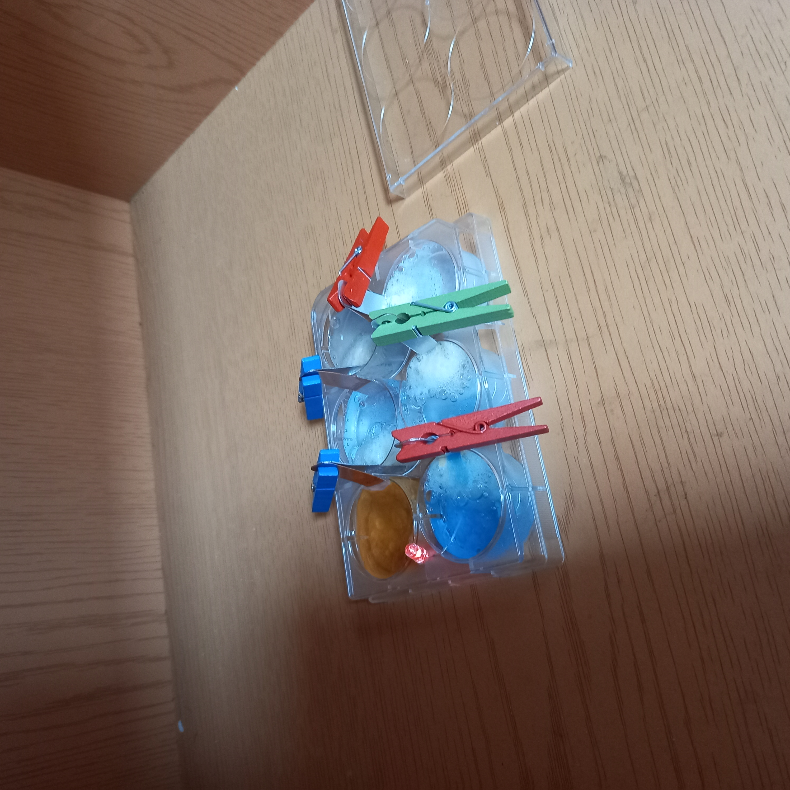

화학전지실험
1. 실험과정
- 구리판과 알루미늄판, LED를 홈판에 꽂는다.
- 소금물을 홈판에 붓는다.
- BTB용액을 홈판에 넣는다.
- 과산화 수소를 떨어뜨린 후 불빛의 밝기를 관찰한다.
2. 실험원리
- 산과 금속의 반응에서 알루미늄과 철은 산화되어 수소가 나오지만 구리는 산 반응 X
- - 극에서는 전하를 만들고 + 극에서는 수소기체 만든다 (H+ 2e -> Ha)
- 분극현상: 구리판 주변에서 환원되어 생성된 수소기체가 빠져나가지 X
수소이온의 환원을 방해하는 현상
- 분극현상을 막기 위해 감극제를 넣어 수소기체를 산화시킨다.
- 이온화 경향에 의해 알루미늄(-), 구리(+), 알루미늄(-) 철(+), 철(-), 구리(+)가 된다.
3. 결과
- 전기가 통해 LED에 불이 들어온다.
- 시간이 지날수록 구리판 근처에는 푸른색이 되고, 알루미늄판 근처에는 기포(수소기체)가 형성된다.

영양소검출실험
생명공학진로인터뷰
과일연료전지